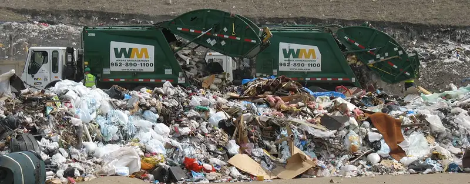
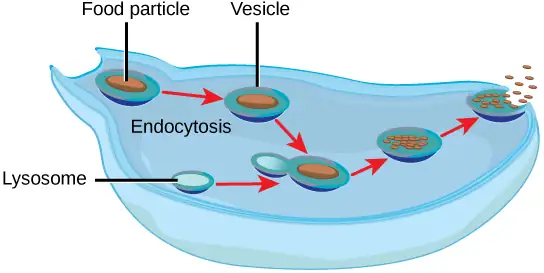
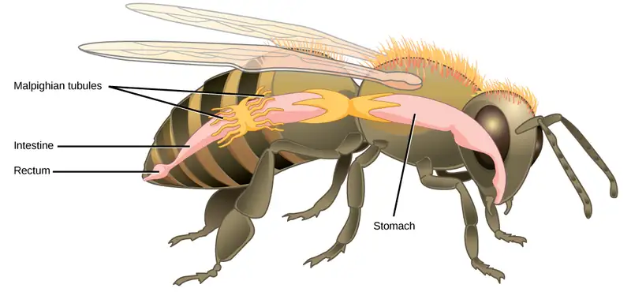
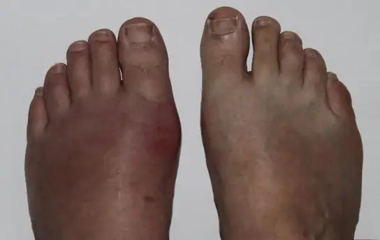

Chapter 41: Osmotic Regulation and Excretion¶
Introduction¶

The daily intake recommendation for human water consumption is eight to ten glasses of water. In order to achieve a healthy balance, the human body should excrete the eight to ten glasses of water every day. This occurs via the processes of urination, defecation, sweating and, to a small extent, respiration. The organs and tissues of the human body are soaked in fluids that are maintained at constant temperature, pH, and solute concentration, all crucial elements of homeostasis. The solutes in body fluids are mainly mineral salts and sugars, and osmotic regulation is the process by which the mineral salts and water are kept in balance. Osmotic homeostasis is maintained despite the influence of external factors like temperature, diet, and weather conditions.
41.1 Osmoregulation and Osmotic Balance¶
Learning Objectives
By the end of this section, you will be able to do the following:
- Define osmosis and explain its role within the body
- Explain why osmoregulation and osmotic balance are important body functions
- Describe active transport mechanisms
- Explain osmolarity and the way in which it is measured
- Describe osmoregulators or osmoconformers and how these tools allow animals to adapt to different environments
Osmosis is the diffusion of water across a membrane in response to osmotic pressure caused by an imbalance of molecules on either side of the membrane. Osmoregulation is the process of maintenance of salt and water balance (osmotic balance) across membranes within the body’s fluids, which are composed of water, plus electrolytes and non-electrolytes. An electrolyte is a solute that dissociates into ions when dissolved in water. A non-electrolyte, in contrast, doesn’t dissociate into ions during water dissolution. Both electrolytes and non-electrolytes contribute to the osmotic balance. The body’s fluids include blood plasma, the cytosol within cells, and interstitial fluid, the fluid that exists in the spaces between cells and tissues of the body. The membranes of the body (such as the pleural, serous, and cell membranes) are semi-permeable membranes. Semi-permeable membranes are permeable (or permissive) to certain types of solutes and water. Solutions on two sides of a semi-permeable membrane tend to equalize in solute concentration by movement of solutes and/or water across the membrane. As seen in Figure 41.2, a cell placed in water tends to swell due to gain of water from the hypotonic or “low salt” environment. A cell placed in a solution with higher salt concentration, on the other hand, tends to make the membrane shrivel up due to loss of water into the hypertonic or “high salt” environment. Isotonic cells have an equal concentration of solutes inside and outside the cell; this equalizes the osmotic pressure on either side of the cell membrane which is a semi-permeable membrane.
![The left part of this illustration shows shriveled red blood cells bathed in a hypertonic solution. Below this, a diagram shows that upper case H subscript 2 baseline upper case O is leaving the red blood cell. The middle part shows healthy red blood cells bathed in an isotonic solution. A diagram below this shows upper H subscript 2 baseline upper O both entering and exiting the cell. And the right part shows bloated red blood cells bathed in a hypotonic solution. One of the bloated cells in the hypotonic solution bursts. A diagram below this shows upper H subscript 2 baseline upper O entering the cell.](img/figure-b41-01-01.webp)
The body does not exist in isolation. There is a constant input of water and electrolytes into the system. While osmoregulation is achieved across membranes within the body, excess electrolytes and wastes are transported to the kidneys and excreted, helping to maintain osmotic balance.
Need for Osmoregulation¶
Biological systems constantly interact and exchange water and nutrients with the environment by way of consumption of food and water and through excretion in the form of sweat, urine, and feces. Without a mechanism to regulate osmotic pressure, or when a disease damages this mechanism, there is a tendency to accumulate toxic waste and water, which can have dire consequences.
Mammalian systems have evolved to regulate not only the overall osmotic pressure across membranes, but also specific concentrations of important electrolytes in the three major fluid compartments: blood plasma, extracellular fluid, and intracellular fluid. Since osmotic pressure is regulated by the movement of water across membranes, the volume of the fluid compartments can also change temporarily. Because blood plasma is one of the fluid components, osmotic pressures have a direct bearing on blood pressure.
Transport of Electrolytes across Cell Membranes¶
Electrolytes, such as sodium chloride, ionize in water, meaning that they dissociate into their component ions. In water, sodium chloride (NaCl), dissociates into the sodium ion (Na+) and the chloride ion (Cl–). The most important ions, whose concentrations are very closely regulated in body fluids, are the cations sodium (Na+), potassium (K+), calcium (Ca+2), magnesium (Mg+2), and the anions chloride (Cl-), carbonate (CO3-2), bicarbonate (HCO3-), and phosphate (PO3-). Electrolytes are lost from the body during urination and perspiration. For this reason, athletes are encouraged to replace electrolytes and fluids during periods of increased activity and perspiration.
Osmotic pressure is influenced by the concentration of solutes in a solution. It is directly proportional to the number of solute atoms or molecules and not dependent on the size of the solute molecules. Because electrolytes dissociate into their component ions, they, in essence, add more solute particles into the solution and have a greater effect on osmotic pressure, per mass than compounds that do not dissociate in water, such as glucose.
Water can pass through membranes by passive diffusion. If electrolyte ions could passively diffuse across membranes, it would be impossible to maintain specific concentrations of ions in each fluid compartment; therefore they require special mechanisms to cross the semi-permeable membranes in the body. This movement can be accomplished by facilitated diffusion and active transport. Facilitated diffusion requires protein-based channels for moving the solute. Active transport requires energy in the form of ATP conversion, carrier proteins, or pumps in order to move ions against the concentration gradient.
Concept of Osmolality and Milliequivalent¶
In order to calculate osmotic pressure, it is necessary to understand how solute concentrations are measured. The unit for measuring solutes is the mole. One mole is defined as the gram molecular weight of the solute. For example, the molecular weight of sodium chloride is 58.44. Thus, one mole of sodium chloride weighs 58.44 grams. The molarity of a solution is the number of moles of solute per liter of solution. The molality of a solution is the number of moles of solute per kilogram of solvent. If the solvent is water, one kilogram of water is equal to one liter of water. While molarity and molality are used to express the concentration of solutions, electrolyte concentrations are usually expressed in terms of milliequivalents per liter (mEq/L): the mEq/L is equal to the ion concentration (in millimoles) multiplied by the number of electrical charges on the ion. The unit of milliequivalent takes into consideration the ions present in the solution (since electrolytes form ions in aqueous solutions) and the charge on the ions.
Thus, for ions that have a charge of one, one milliequivalent is equal to one millimole. For ions that have a charge of two (like calcium), one milliequivalent is equal to 0.5 millimoles. Another unit for the expression of electrolyte concentration is the milliosmole (mOsm), which is the number of milliequivalents of solute per kilogram of solvent. Body fluids are usually maintained within the range of 280 to 300 mOsm.
Osmoregulators and Osmoconformers¶
Persons lost at sea without any freshwater to drink are at risk of severe dehydration because the human body cannot adapt to drinking seawater, which is hypertonic in comparison to body fluids. Organisms such as goldfish that can tolerate only a relatively narrow range of salinity are referred to as stenohaline. About 90 percent of all bony fish are restricted to either freshwater or seawater. They are incapable of osmotic regulation in the opposite environment. It is possible, however, for a few fishes like salmon to spend part of their life in freshwater and part in seawater. Organisms like the salmon and molly that can tolerate a relatively wide range of salinity are referred to as euryhaline organisms. This is possible because some fish have evolved osmoregulatory mechanisms to survive in all kinds of aquatic environments. When they live in freshwater, their bodies tend to take up water because the environment is relatively hypotonic, as illustrated in Figure 41.3a. In such hypotonic environments, these fish do not drink much water. Instead, they pass a lot of very dilute urine, and they achieve electrolyte balance by active transport of salts through the gills. When they move to a hypertonic marine environment, these fish start drinking seawater; they excrete the excess salts through their gills and their urine, as illustrated in Figure 41.3b. Most marine invertebrates, on the other hand, may be isotonic with seawater (osmoconformers). Their body fluid concentrations conform to changes in seawater concentration. Cartilaginous fishes’ salt composition of the blood is similar to bony fishes; however, the blood of sharks contains the organic compounds urea and trimethylamine oxide (TMAO). This does not mean that their electrolyte composition is similar to that of seawater. They achieve isotonicity with the sea by storing large concentrations of urea. These animals that secrete urea are called ureotelic animals. TMAO stabilizes proteins in the presence of high urea levels, preventing the disruption of peptide bonds that would occur in other animals exposed to similar levels of urea. Sharks are cartilaginous fish with a rectal gland to secrete salt and assist in osmoregulation.
![Illustration A shows a fish in a freshwater environment, where water is absorbed through the skin. To compensate, the fish drinks little water and excretes dilute urine. Sodium, potassium and chlorine ions are lost through the skin, and the fish actively transports these same ions into its gills to compensate for this loss. Illustration B shows a fish in a saltwater environment, where water is lost through the skin. To compensate, the fish drinks ample water and excretes concentrated urine. It absorbs sodium, potassium, and chlorine ions through its skin, and excretes them through its gills.](img/figure-41-01-02ab.webp)
Career Connection: Dialysis Technician
Dialysis is a medical process of removing wastes and excess water from the blood by diffusion and ultrafiltration. When kidney function fails, dialysis must be done to artificially rid the body of wastes. This is a vital process to keep patients alive. In some cases, the patients undergo artificial dialysis until they are eligible for a kidney transplant. In others who are not candidates for kidney transplants, dialysis is a life-long necessity.
Dialysis technicians typically work in hospitals and clinics. While some roles in this field include equipment development and maintenance, most dialysis technicians work in direct patient care. Their on-the-job duties, which typically occur under the direct supervision of a registered nurse, focus on providing dialysis treatments. This can include reviewing patient history and current condition, assessing and responding to patient needs before and during treatment, and monitoring the dialysis process. Treatment may include taking and reporting a patient’s vital signs and preparing solutions and equipment to ensure accurate and sterile procedures.
41.2 The Kidneys and Osmoregulatory Organs¶
Learning Objectives
By the end of this section, you will be able to do the following:
- Explain how the kidneys serve as the main osmoregulatory organs in mammalian systems
- Describe the structure of the kidneys and the functions of the parts of the kidney
- Describe how the nephron is the functional unit of the kidney and explain how it actively filters blood and generates urine
- Detail the three steps in the formation of urine: glomerular filtration, tubular reabsorption, and tubular secretion
Although the kidneys are the major osmoregulatory organ, the skin and lungs also play a role in the process. Water and electrolytes are lost through sweat glands in the skin, which helps moisturize and cool the skin surface, while the lungs expel a small amount of water in the form of mucous secretions and via evaporation of water vapor.
Kidneys: The Main Osmoregulatory Organ¶
The kidneys, illustrated in Figure 41.4, are a pair of bean-shaped structures that are located just below and posterior to the liver in the peritoneal cavity. The adrenal glands sit on top of each kidney and are also called the suprarenal glands. Kidneys filter blood and purify it. All the blood in the human body is filtered many times a day by the kidneys; these organs use up almost 25 percent of the oxygen absorbed through the lungs to perform this function. Oxygen allows the kidney cells to efficiently manufacture chemical energy in the form of ATP through aerobic respiration. The filtrate coming out of the kidneys is called urine.
![Illustration shows the placement of the kidneys and bladder in a human man. The two kidneys face one another and are located on the posterior side, about halfway up the back. A renal artery and a renal vein extend from the inside middle of each kidney, toward a major blood vessel that runs up the middle of the body. A ureter runs down from each kidney to the bladder, a sac that sits just above the pelvis. The urethra runs down from the bottom of the bladder and through the penis. The adrenal glands are lumpy masses that sit on top of the kidneys.](img/figure-41-03-01.webp)
Kidney Structure¶
Externally, the kidneys are surrounded by three layers, illustrated in Figure 41.5. The outermost layer is a tough connective tissue layer called the renal fascia. The second layer is called the perirenal fat capsule, which helps anchor the kidneys in place. The third and innermost layer is the renal capsule. Internally, the kidney has three regions—an outer cortex, a medulla in the middle, and the renal pelvis in the region called the hilum of the kidney. The hilum is the concave part of the bean-shape where blood vessels and nerves enter and exit the kidney; it is also the point of exit for the ureters. The renal cortex is granular due to the presence of nephrons—the functional unit of the kidney. The medulla consists of multiple pyramidal tissue masses, called the renal pyramids. In between the pyramids are spaces called renal columns through which the blood vessels pass. The tips of the pyramids, called renal papillae, point toward the renal pelvis. There are, on average, eight renal pyramids in each kidney. The renal pyramids along with the adjoining cortical region are called the lobes of the kidney. The renal pelvis leads to the ureter on the outside of the kidney. On the inside of the kidney, the renal pelvis branches out into two or three extensions called the major calyces, which further branch into the minor calyces. The ureters are urine-bearing tubes that exit the kidney and empty into the urinary bladder.
Visual Connection
![The kidney is shaped like a kidney bean standing on end. Two layers, the outer renal fascia and an inner capsule, cover the outside of the kidney. The inside of the kidney consists of three layers: the outer cortex, the middle medulla and the inner renal pelvis. The renal pelvis is flush with the concave side of the kidney, and empties into the ureter, a tube that runs down outside the concave side of the kidney. Eight renal pyramids are embedded in the medulla, which is the thickest kidney layer. Each renal pyramid is teardrop-shaped, with the narrow end facing the renal pelvis. The renal artery and renal vein enter the concave part of the kidney, just above the ureter. The renal artery and renal vein branch into arterioles and venuoles, respectively, which extend into the kidney and branch into capillaries in the cortex.](img/figure-41-03-02.webp)
Which of the following statements about the kidney is false?
- The renal pelvis drains into the ureter.
- The renal pyramids are in the medulla.
- The cortex covers the capsule.
- Nephrons are in the renal cortex.
Because the kidney filters blood, its network of blood vessels is an important component of its structure and function. The arteries, veins, and nerves that supply the kidney enter and exit at the renal hilum. Renal blood supply starts with the branching of the aorta into the renal arteries (which are each named based on the region of the kidney they pass through) and ends with the exiting of the renal veins to join the inferior vena cava. The renal arteries split into several segmental arteries upon entering the kidneys. Each segmental artery splits further into several interlobar arteries and enters the renal columns, which supply the renal lobes. The interlobar arteries split at the junction of the renal cortex and medulla to form the arcuate arteries. The arcuate “bow shaped” arteries form arcs along the base of the medullary pyramids. Cortical radiate arteries, as the name suggests, radiate out from the arcuate arteries. The cortical radiate arteries branch into numerous afferent arterioles, and then enter the capillaries supplying the nephrons. Veins trace the path of the arteries and have similar names, except there are no segmental veins.
As mentioned previously, the functional unit of the kidney is the nephron, illustrated in Figure 41.6. Each kidney is made up of over one million nephrons that dot the renal cortex, giving it a granular appearance when sectioned sagittally. There are two types of nephrons—cortical nephrons (85 percent), which are deep in the renal cortex, and juxtamedullary nephrons (15 percent), which lie in the renal cortex close to the renal medulla. A nephron consists of three parts—a renal corpuscle, a renal tubule, and the associated capillary network, which originates from the cortical radiate arteries.
Visual Connection
![Illustration shows the nephron, a tube-like structure that begins in the kidney cortex. Here, arterioles converge in a bulb-like structure called the glomerulus, which is partly surrounded by a Bowman's capsule. Afferent arterioles enter the glomerulus, and efferent arterioles leave. The glomerulus empties into the proximal convoluted tubule. A long loop, called the loop of Henle, extends from the proximal convoluted tubule to the inner medulla of the kidney, and then back out to the cortex. There, the loop of Henle joins a distal convoluted tubule. The distal convoluted tubule joins a collecting duct, which travels from the cortex back into the medulla, toward the center of the kidney. Eventually, the contents of the renal pyramid empty into the renal pelvis, and then the ureter.](img/figure-41-03-03.webp)
Which of the following statements about the nephron is false?
- The collecting duct empties into the distal convoluted tubule.
- The Bowman’s capsule surrounds the glomerulus.
- The loop of Henle is between the proximal and distal convoluted tubules.
- The loop of Henle empties into the distal convoluted tubule.
Renal Corpuscle¶
The renal corpuscle, located in the renal cortex, is made up of a network of capillaries known as the glomerulus and the capsule, a cup-shaped chamber that surrounds it, called the glomerular or Bowman's capsule.
Renal Tubule¶
The renal tubule is a long and convoluted structure that emerges from the glomerulus and can be divided into three parts based on function. The first part is called the proximal convoluted tubule (PCT) due to its proximity to the glomerulus; it stays in the renal cortex. The second part is called the loop of Henle, or nephritic loop, because it forms a loop (with descending and ascending limbs) that goes through the renal medulla. The third part of the renal tubule is called the distal convoluted tubule (DCT) and this part is also restricted to the renal cortex. The DCT, which is the last part of the nephron, connects and empties its contents into collecting ducts that line the medullary pyramids. The collecting ducts amass contents from multiple nephrons and fuse together as they enter the papillae of the renal medulla.
Capillary Network within the Nephron¶
The capillary network that originates from the renal arteries supplies the nephron with blood that needs to be filtered. The branch that enters the glomerulus is called the afferent arteriole. The branch that exits the glomerulus is called the efferent arteriole. Within the glomerulus, the network of capillaries is called the glomerular capillary bed. Once the efferent arteriole exits the glomerulus, it forms the peritubular capillary network, which surrounds and interacts with parts of the renal tubule. In cortical nephrons, the peritubular capillary network surrounds the PCT and DCT. In juxtamedullary nephrons, the peritubular capillary network forms a network around the loop of Henle and is called the vasa recta.
Interactive
Go to this website to see another coronal section of the kidney and to explore an animation of the workings of nephrons.
Kidney Function and Physiology¶
Kidneys filter blood in a three-step process. First, the nephrons filter blood that runs through the capillary network in the glomerulus. Almost all solutes, except for proteins, are filtered out into the glomerulus by a process called glomerular filtration. Second, the filtrate is collected in the renal tubules. Most of the solutes get reabsorbed in the PCT by a process called tubular reabsorption. In the loop of Henle, the filtrate continues to exchange solutes and water with the renal medulla and the peritubular capillary network. Water is also reabsorbed during this step. Then, additional solutes and wastes are secreted into the kidney tubules during tubular secretion, which is, in essence, the opposite process to tubular reabsorption. The collecting ducts collect filtrate coming from the nephrons and fuse in the medullary papillae. From here, the papillae deliver the filtrate, now called urine, into the minor calyces that eventually connect to the ureters through the renal pelvis. This entire process is illustrated in Figure 41.7.
![Illustration labels parts of a nephron and their function. The nephron begins at the glomerulus, a spherical structure that filters small solutes from the blood. The filtrate then enters a winding proximal convoluted tubule, which reabsorbs ions, water, and nutrients, and removes toxins and adjusts the filtrate p H. The proximal convoluted tubule empties into the descending loop of Henle. Aquaporins in the descending loop allow water to pass from the filtrate to the interstitial fluid. The descending loop of Henle turns into the ascending loop of Henle. Both the descending loop and ascending loop are thin at the bottom, and turn thick about a third of the way up. In the ascending loop of Henle, sodium and chlorine ions are reabsorbed from the filtrate into the interstitial fluid. The ascending loop of Henle empties into the distal convoluted tubule, which selectively secretes and absorbs ions to maintain blood p H and electrolyte balance. The distal convoluted tubule empties into a collecting duct, which reabsorbs water and solutes from the filtrate. The collecting duct travels down, toward the middle of the kidney.](img/figure-41-03-04.webp)
Glomerular Filtration¶
Glomerular filtration filters out most of the solutes due to high blood pressure and specialized membranes in the afferent arteriole. The blood pressure in the glomerulus is maintained independent of factors that affect systemic blood pressure. The “leaky” connections between the endothelial cells of the glomerular capillary network allow solutes to pass through easily. All solutes in the glomerular capillaries, except for macromolecules like proteins, pass through by passive diffusion. There is no energy requirement at this stage of the filtration process. Glomerular filtration rate (GFR) is the volume of glomerular filtrate formed per minute by the kidneys. GFR is regulated by multiple mechanisms and is an important indicator of kidney function.
Interactive
To learn more about the vascular system of kidneys, click through this review and the steps of blood flow.
Tubular Reabsorption and Secretion¶
Tubular reabsorption occurs in the PCT part of the renal tubule. Almost all nutrients are reabsorbed, and this occurs either by passive or active transport. Reabsorption of water and some key electrolytes are regulated and can be influenced by hormones. Sodium (Na+) is the most abundant ion and most of it is reabsorbed by active transport and then transported to the peritubular capillaries. Because Na+ is actively transported out of the tubule, water follows it to even out the osmotic pressure. Water is also independently reabsorbed into the peritubular capillaries due to the presence of aquaporins, or water channels, in the PCT. This occurs due to the low blood pressure and high osmotic pressure in the peritubular capillaries. However, every solute has a transport maximum and the excess is not reabsorbed.
In the loop of Henle, the permeability of the membrane changes. The descending limb is permeable to water, not solutes; the opposite is true for the ascending limb. Additionally, the loop of Henle invades the renal medulla, which is naturally high in salt concentration and tends to absorb water from the renal tubule and concentrate the filtrate. The osmotic gradient increases as it moves deeper into the medulla. Because two sides of the loop of Henle perform opposing functions, as illustrated in Figure 41.8, it acts as a countercurrent multiplier. The vasa recta around it acts as the countercurrent exchanger.
Visual Connection
![A U-shaped tube represents the loop of Henle. Filtrate enters the descending limb, and exits the ascending limb. The descending limb is water-permeable, and water travels from the limb to the interstitial space. As a consequence, the osmolality of the filtrate inside the limb increases from 300 milliosmoles per liter at the top to 1200 milliosmoles per liter at the bottom. The ascending limb is permeable to sodium and chloride ions. Because the osmolality inside bottom part of the limb is higher than the interstitial fluid, these ions diffuse out of the ascending limb. Higher up, sodium is actively transported out of the limb, and chloride follows. At the top of the ascending limb, the filtrate is 100 milliosmoles.](img/figure-41-03-05.webp)
Loop diuretics are drugs sometimes used to treat hypertension. These drugs inhibit the reabsorption of Na+ and Cl- ions by the ascending limb of the loop of Henle. A side effect is that they increase urination. Why do you think this is the case?
By the time the filtrate reaches the DCT, most of the urine and solutes have been reabsorbed. If the body requires additional water, all of it can be reabsorbed at this point. Further reabsorption is controlled by hormones, which will be discussed in a later section. Excretion of wastes occurs due to lack of reabsorption combined with tubular secretion. Undesirable products like metabolic wastes, urea, uric acid, and certain drugs, are excreted by tubular secretion. Most of the tubular secretion happens in the DCT, but some occurs in the early part of the collecting duct. Kidneys also maintain an acid-base balance by secreting excess H+ ions.
Although parts of the renal tubules are named proximal and distal, in a cross-section of the kidney, the tubules are placed close together and in contact with each other and the glomerulus. This allows for exchange of chemical messengers between the different cell types. For example, the DCT ascending limb of the loop of Henle has masses of cells called macula densa, which are in contact with cells of the afferent arterioles called juxtaglomerular cells. Together, the macula densa and juxtaglomerular cells form the juxtaglomerular complex (JGC). The JGC is an endocrine structure that secretes the enzyme renin and the hormone erythropoietin. When hormones trigger the macula densa cells in the DCT due to variations in blood volume, blood pressure, or electrolyte balance, these cells can immediately communicate the problem to the capillaries in the afferent and efferent arterioles, which can constrict or relax to change the glomerular filtration rate of the kidneys.
Career Connection: Nephrologist
A nephrologist studies and deals with diseases of the kidneys—both those that cause kidney failure (such as diabetes) and the conditions that are produced by kidney disease (such as hypertension). Blood pressure, blood volume, and changes in electrolyte balance come under the purview of a nephrologist.
Nephrologists usually work with other physicians who refer patients to them or consult with them about specific diagnoses and treatment plans. Patients are usually referred to a nephrologist for symptoms such as blood or protein in the urine, very high blood pressure, kidney stones, or renal failure.
Nephrology is a subspecialty of internal medicine. To become a nephrologist, medical school is followed by additional training to become certified in internal medicine. An additional two or more years is spent specifically studying kidney disorders and their accompanying effects on the body.
41.3 Excretion Systems¶
Learning Objectives
By the end of this section, you will be able to do the following:
- Explain how vacuoles, present in microorganisms, work to excrete waste
- Describe the way in which flame cells and nephridia in worms perform excretory functions and maintain osmotic balance
- Explain how insects use Malpighian tubules to excrete wastes and maintain osmotic balance
Microorganisms and invertebrate animals use more primitive and simple mechanisms to get rid of their metabolic wastes than the mammalian system of kidney and urinary function. Three excretory systems evolved in organisms before complex kidneys: vacuoles, flame cells, and Malpighian tubules.
Contractile Vacuoles in Microorganisms¶
The most fundamental feature of life is the presence of a cell. In other words, a cell is the simplest functional unit of a life. Bacteria are unicellular, prokaryotic organisms that have some of the least complex life processes in place; however, prokaryotes such as bacteria do not contain membrane-bound vacuoles. The cells of microorganisms like bacteria, protozoa, and fungi are bound by cell membranes and use them to interact with the environment. Some cells, including some leucocytes in humans, are able to engulf food by endocytosis—the formation of vesicles by involution of the cell membrane within the cells. The same vesicles are able to interact and exchange metabolites with the intracellular environment. In some unicellular eukaryotic organisms such as the amoeba, shown in Figure 41.9, cellular wastes and excess water are excreted by exocytosis, when the contractile vacuoles merge with the cell membrane and expel wastes into the environment. Contractile vacuoles (CV) should not be confused with vacuoles, which store food or water.

Flame Cells of Planaria and Nephridia of Worms¶
As multicellular systems evolved to have organ systems that divided the metabolic needs of the body, individual organs evolved to perform the excretory function. Planaria are flatworms that live in freshwater. Their excretory system consists of two tubules connected to a highly branched duct system. The cells in the tubules are called flame cells (or protonephridia) because they have a cluster of cilia that looks like a flickering flame when viewed under the microscope, as illustrated in Figure 41.10a. The cilia propel waste matter down the tubules and out of the body through excretory pores that open on the body surface; cilia also draw water from the interstitial fluid, allowing for filtration. Any valuable metabolites are recovered by reabsorption. Flame cells are found in flatworms, including parasitic tapeworms and free-living planaria. They also maintain the organism’s osmotic balance.
![Illustration A shows a flame cell, which is bulb-shaped with cilia projecting from one end. The cilia form a point, like the tip of a paintbrush, inside a wide opening at the end of a tube cell. The tube cell narrows into a tubule, then widens into a body where the nucleus is located. The tubule continues past the cell body. Illustration B shows a cross section of an earthworm, which is segmented with walls separating each segment. The trumpet-like opening of a nephridium sticks out of the wall. Cilia surround the opening. Beyond the wall, the nephridium forms a tube that winds down to the ventral surface, where it connects with an opening to the exterior. Just above the opening the tube widens into a bladder.](img/figure-41-02-02.webp)
Earthworms (annelids) have slightly more evolved excretory structures called nephridia, illustrated in Figure 41.10b. A pair of nephridia is present on each segment of the earthworm. They are similar to flame cells in that they have a tubule with cilia. Excretion occurs through a pore called the nephridiopore. They are more evolved than the flame cells in that they have a system for tubular reabsorption by a capillary network before excretion.
Malpighian Tubules of Insects¶
Malpighian tubules are found lining the gut of some species of arthropods, such as the bee illustrated in Figure 41.11. They are usually found in pairs and the number of tubules varies with the species of insect. Malpighian tubules are convoluted, which increases their surface area, and they are lined with microvilli for reabsorption and maintenance of osmotic balance. Malpighian tubules work cooperatively with specialized glands in the wall of the rectum. Body fluids are not filtered as in the case of nephridia; urine is produced by tubular secretion mechanisms by the cells lining the Malpighian tubules that are bathed in hemolymph (a mixture of blood and interstitial fluid that is found in insects and other arthropods as well as most mollusks). Metabolic wastes like uric acid freely diffuse into the tubules. There are exchange pumps lining the tubules, which actively transport H+ ions into the cell and K+ or Na+ ions out; water passively follows to form urine. The secretion of ions alters the osmotic pressure which draws water, electrolytes, and nitrogenous waste (uric acid) into the tubules. Water and electrolytes are reabsorbed when these organisms are faced with low-water environments, and uric acid is excreted as a thick paste or powder. Not dissolving wastes in water helps these organisms to conserve water; this is especially important for life in dry environments.

Interactive
See a dissected cockroach, including a close-up look at its Malpighian tubules, in this video.
41.4 Nitrogenous Wastes¶
Learning Objectives
By the end of this section, you will be able to do the following:
- Compare and contrast the way in which aquatic animals and terrestrial animals can eliminate toxic ammonia from their systems
- Compare the major byproduct of ammonia metabolism in vertebrate animals to that of birds, insects, and reptiles
Of the four major macromolecules in biological systems, both proteins and nucleic acids contain nitrogen. During the catabolism, or breakdown, of nitrogen-containing macromolecules, carbon, hydrogen, and oxygen are extracted and stored in the form of carbohydrates and fats. Excess nitrogen is excreted from the body. Nitrogenous wastes tend to form toxic ammonia, which raises the pH of body fluids. The formation of ammonia itself requires energy in the form of ATP and large quantities of water to dilute it out of a biological system. Animals that live in aquatic environments tend to release ammonia into the water. Animals that excrete ammonia are said to be ammonotelic. Terrestrial organisms have evolved other mechanisms to excrete nitrogenous wastes. The animals must detoxify ammonia by converting it into a relatively nontoxic form such as urea or uric acid. Mammals, including humans, produce urea, whereas reptiles and many terrestrial invertebrates produce uric acid. Animals that secrete urea as the primary nitrogenous waste material are called ureotelic animals.
Nitrogenous Waste in Terrestrial Animals: The Urea Cycle¶
The urea cycle is the primary mechanism by which mammals convert ammonia to urea. Urea is made in the liver and excreted in urine. The overall chemical reaction by which ammonia is converted to urea is 2 NH3 (ammonia) + CO2 + 3 ATP + H2O → H2N-CO-NH2 (urea) + 2 ADP + 4 Pi + AMP.
The urea cycle utilizes five intermediate steps, catalyzed by five different enzymes, to convert ammonia to urea, as shown in Figure 41.12. The amino acid L-ornithine gets converted into different intermediates before being regenerated at the end of the urea cycle. Hence, the urea cycle is also referred to as the ornithine cycle. The enzyme ornithine transcarbamylase catalyzes a key step in the urea cycle and its deficiency can lead to accumulation of toxic levels of ammonia in the body. The first two reactions occur in the mitochondria and the last three reactions occur in the cytosol. Urea concentration in the blood, called blood urea nitrogen or BUN, is used as an indicator of kidney function.
![The urea cycle begins in the mitochondrion, where bicarbonate, shown as upper case H upper case C upper case O subscript 3 baseline is combined with ammonia, shown as upper case N upper case H subscript 3 baseline to make carbamoyl phosphate. Two A T P are used in the process. Ornithine transcarbamylase adds the carbamoyl phosphate to a five-carbon amino acid called ornithine to make L citrulline. L citrulline leaves the mitochondrion, and an enzyme called arginosuccinate synthetase adds a four carbon amino acid called L aspartate to it to make arginosuccinate. In the process, one A T P is converted to A M P and upper case P upper case P lower case i. Arginosuccinate lyase removes a four carbon fumarate molecule from the arginosuccinate, forming the six carbon amino acid L arginine. Arginase 1 removes a urea molecule from the L arginine, forming ornithine in the process. Urea has a single carbon double bonded to an oxygen and single bonded to two ammonia groups. Ornithine enters the mitochondrion, completing the cycle.](img/figure-41-04-01.webp)
Evolution Connection: Excretion of Nitrogenous Waste
The theory of evolution proposes that life started in an aquatic environment. It is not surprising to see that biochemical pathways like the urea cycle evolved to adapt to a changing environment when terrestrial life forms evolved. Arid conditions probably led to the evolution of the uric acid pathway as a means of conserving water.
Nitrogenous Waste in Birds and Reptiles: Uric Acid¶
Birds, reptiles, and most terrestrial arthropods convert toxic ammonia to uric acid or the closely related compound guanine (guano) instead of urea. Mammals also form some uric acid during breakdown of nucleic acids. Uric acid is a compound similar to purines found in nucleic acids. It is water insoluble and tends to form a white paste or powder; it is excreted by birds, insects, and reptiles. Conversion of ammonia to uric acid requires more energy and is much more complex than conversion of ammonia to urea Figure 41.13.
![Part A shows a photo of a freshwater fish and states that many invertebrates and aquatic species excrete ammonia. The chemical structure of ammonia is upper case N upper case H subscript 3 baseline. Part B shows a photo of a wood rat and states that mammals, many adult amphibians, and some marine species excrete urea. The chemical structure of urea is shown. Urea has two upper N upper H subscript 2 baseline groups attached to a central carbon. An oxygen is also double-bonded to this central carbon. Part C shows a photo of a pigeon and states that insects, land snails, birds, and many reptiles excrete uric acid. The chemical structure of uric acid is shown. Uric acid has a six-membered carbon ring attached to a five-membered ring. Each ring has two upper N upper H groups embedded in it. An oxygen is double-bonded to each ring.](img/figure-41-04-02abc.webp)
Everyday Connection: Gout
Mammals use uric acid crystals as an antioxidant in their cells. However, too much uric acid tends to form kidney stones and may also cause a painful condition called gout, where uric acid crystals accumulate in the joints, as illustrated in Figure 41.14. Food choices that reduce the amount of nitrogenous bases in the diet help reduce the risk of gout. For example, tea, coffee, and chocolate have purine-like compounds, called xanthines, and should be avoided by people with gout and kidney stones.

41.5 Hormonal Control of Osmoregulatory Functions¶
Learning Objectives
By the end of this section, you will be able to do the following:
- Explain how hormonal cues help the kidneys synchronize the osmotic needs of the body
- Describe how hormones like epinephrine, norepinephrine, renin-angiotensin, aldosterone, anti-diuretic hormone, and atrial natriuretic peptide help regulate waste elimination, maintain correct osmolarity, and perform other osmoregulatory functions
While the kidneys operate to maintain osmotic balance and blood pressure in the body, they also act in concert with hormones. Hormones are small molecules that act as messengers within the body. Hormones are typically secreted from one cell and travel in the bloodstream to affect a target cell in another portion of the body. Different regions of the nephron bear specialized cells that have receptors to respond to chemical messengers and hormones. Table 41.1 summarizes the hormones that control the osmoregulatory functions.
Table 41.1
| Hormones That Affect Osmoregulation | ||
|---|---|---|
| Hormone | Where produced | Function |
| Epinephrine and Norepinephrine | Adrenal medulla | Can decrease kidney function temporarily by vasoconstriction |
| Renin | Kidney nephrons | Increases blood pressure by acting on angiotensinogen |
| Angiotensin | Liver | Angiotensin II affects multiple processes and increases blood pressure |
| Aldosterone | Adrenal cortex | Prevents loss of sodium and water |
| Anti-diuretic hormone (vasopressin) | Hypothalamus (stored in the posterior pituitary) | Prevents water loss |
| Atrial natriuretic peptide | Heart atrium | Decreases blood pressure by acting as a vasodilator and increasing glomerular filtration rate; decreases sodium reabsorption in kidneys |
Epinephrine and Norepinephrine¶
Epinephrine and norepinephrine are synthesized by the adrenal medulla. They are the flight/fight hormones that are released when the body is under extreme stress. During stress, much of the body’s energy is used to combat imminent danger. Kidney function is halted temporarily by epinephrine and norepinephrine. These hormones function by acting directly on the smooth muscles of blood vessels to constrict them. Once the afferent arterioles are constricted, blood flow into the nephrons stops. These hormones go one step further and trigger the renin-angiotensin-aldosterone system.
Renin-Angiotensin-Aldosterone¶
The renin-angiotensin-aldosterone system, illustrated in Figure 41.15 proceeds through several steps to produce angiotensin II, which acts to stabilize blood pressure and volume. Renin (secreted by a part of the juxtaglomerular complex) is produced by the granular cells of the afferent and efferent arterioles. Thus, the kidneys control blood pressure and volume directly. Renin acts on angiotensinogen, which is made in the liver and converts it to angiotensin I. Angiotensin converting enzyme (ACE) converts angiotensin I to angiotensin II. Angiotensin II raises blood pressure by constricting blood vessels. It also triggers the release of the mineralocorticoid aldosterone from the adrenal cortex, which in turn stimulates the renal tubules to reabsorb more sodium. Angiotensin II also triggers the release of anti-diuretic hormone (ADH) from the hypothalamus, leading to water retention in the kidneys. It acts directly on the nephrons and decreases glomerular filtration rate. Medically, blood pressure can be controlled by drugs that inhibit ACE (called ACE inhibitors).
![The renin-angiotensin-aldosterone pathway involves four hormones: renin, which is made in the kidney, angiotensin, which is made in the liver, aldosterone, which is made in the adrenal glands, and A D H, which is made in the hypothalamus and secreted by the posterior pituitary. The adrenal glands are located on top of the kidneys, and the hypothalamus and pituitary are in the brain. The pathway begins when renin converts angiotensinogen into angiotensin I. An enzyme called A C E then converts angiotensin I into angiotensin I I. Angiotensin I I has several direct effects. These include arterial constriction, which increases blood pressure, decreasing the glomerular filtration rate, which results in water retention, and increasing thirst. Angiotensin I I also triggers the release of two other hormones, aldosterone and A D H. Aldosterone causes nephron distal tubules to reabsorb more sodium and water, which increases blood volume. A D H mediates the insertion of aquaporins into the nephridial collecting ducts. As a result, more water is reabsorbed by the blood. A D H also causes arteries to constrict. The hormone A N P is antagonistic to the angiotensin pathway. A N P decreases blood pressure and volume by increasing the glomerulus filtration rate, decreasing reabsorption of sodium ions by the nephron, and by inhibiting the release of renin from the kidney and aldosterone from the adrenal gland.](img/figure-b41-05-01.webp)
Mineralocorticoids¶
Mineralocorticoids are hormones synthesized by the adrenal cortex that affect osmotic balance. Aldosterone is a mineralocorticoid that regulates sodium levels in the blood. Almost all of the sodium in the blood is reclaimed by the renal tubules under the influence of aldosterone. Because sodium is always reabsorbed by active transport and water follows sodium to maintain osmotic balance, aldosterone manages not only sodium levels but also the water levels in body fluids. In contrast, the aldosterone also stimulates potassium secretion concurrently with sodium reabsorption. In contrast, absence of aldosterone means that no sodium gets reabsorbed in the renal tubules and all of it gets excreted in the urine. In addition, the daily dietary potassium load is not secreted and the retention of K+ can cause a dangerous increase in plasma K+ concentration. Patients who have Addison's disease have a failing adrenal cortex and cannot produce aldosterone. They lose sodium in their urine constantly, and if the supply is not replenished, the consequences can be fatal.
Antidiuretic Hormone¶
As previously discussed, antidiuretic hormone or ADH (also called vasopressin), as the name suggests, helps the body conserve water when body fluid volume, especially that of blood, is low. It is formed by the hypothalamus and is stored and released from the posterior pituitary. It acts by inserting aquaporins in the collecting ducts and promotes reabsorption of water. ADH also acts as a vasoconstrictor and increases blood pressure during hemorrhaging.
Atrial Natriuretic Peptide Hormone¶
The atrial natriuretic peptide (ANP) lowers blood pressure by acting as a vasodilator. It is released by cells in the atrium of the heart in response to high blood pressure and in patients with sleep apnea. ANP affects salt release, and because water passively follows salt to maintain osmotic balance, it also has a diuretic effect. ANP also prevents sodium reabsorption by the renal tubules, decreasing water reabsorption (thus acting as a diuretic) and lowering blood pressure. Its actions suppress the actions of aldosterone, ADH, and renin.
Chapter Review¶
Key Terms¶
- afferent arteriole
- arteriole that branches from the cortical radiate artery and enters the glomerulus
- ammonia
- compound made of one nitrogen atom and three hydrogen atoms
- ammonotelic
- describes an animal that excretes ammonia as the primary waste material
- angiotensin converting enzyme (ACE)
- enzyme that converts angiotensin I to angiotensin II
- angiotensin I
- product in the renin-angiotensin-aldosterone pathway
- angiotensin II
- molecule that affects different organs to increase blood pressure
- anti-diuretic hormone (ADH)
- hormone that prevents the loss of water
- antioxidant
- agent that prevents cell destruction by reactive oxygen species
- arcuate artery
- artery that branches from the interlobar artery and arches over the base of the renal pyramids
- ascending limb
- part of the loop of Henle that ascends from the renal medulla to the renal cortex
- blood urea nitrogen (BUN)
- estimate of urea in the blood and an indicator of kidney function
- Bowman's capsule
- structure that encloses the glomerulus
- calyx
- structure that connects the renal pelvis to the renal medulla
- cortex (animal)
- outer layer of an organ like the kidney or adrenal gland
- cortical nephron
- nephron that lies in the renal cortex
- cortical radiate artery
- artery that radiates from the arcuate arteries into the renal cortex
- countercurrent exchanger
- peritubular capillary network that allows exchange of solutes and water from the renal tubules
- countercurrent multiplier
- osmotic gradient in the renal medulla that is responsible for concentration of urine
- descending limb
- part of the loop of Henle that descends from the renal cortex into the renal medulla
- distal convoluted tubule (DCT)
- part of the renal tubule that is the most distant from the glomerulus
- efferent arteriole
- arteriole that exits from the glomerulus
- electrolyte
- solute that breaks down into ions when dissolved in water
- flame cell
- (also, protonephridia) excretory cell found in flatworms
- glomerular filtration
- filtration of blood in the glomerular capillary network into the glomerulus
- glomerular filtration rate (GFR)
- amount of filtrate formed by the glomerulus per minute
- glomerulus (renal)
- part of the renal corpuscle that contains the capillary network
- hilum
- region in the renal pelvis where blood vessels, nerves, and ureters bunch before entering or exiting the kidney
- inferior vena cava
- one of the main veins in the human body
- interlobar artery
- artery that branches from the segmental artery and travels in between the renal lobes
- juxtaglomerular cell
- cell in the afferent and efferent arterioles that responds to stimuli from the macula densa
- juxtamedullary nephron
- nephron that lies in the cortex but close to the renal medulla
- kidney
- organ that performs excretory and osmoregulatory functions
- lobes of the kidney
- renal pyramid along with the adjoining cortical region
- loop of Henle
- part of the renal tubule that loops into the renal medulla
- macula densa
- group of cells that senses changes in sodium ion concentration; present in parts of the renal tubule and collecting ducts
- Malpighian tubule
- excretory tubules found in arthropods
- medulla
- middle layer of an organ like the kidney or adrenal gland
- microvilli
- cellular processes that increase the surface area of cells
- molality
- number of moles of solute per kilogram of solvent
- molarity
- number of moles of solute per liter of solution
- mole
- gram equivalent of the molecular weight of a substance
- nephridia
- excretory structures found in annelids
- nephridiopore
- pore found at the end of nephridia
- nephron
- functional unit of the kidney
- non-electrolyte
- solute that does not break down into ions when dissolved in water
- osmoconformer
- organism that changes its tonicity based on its environment
- osmoregulation
- mechanism by which water and solute concentrations are maintained at desired levels
- osmoregulator
- organism that maintains its tonicity irrespective of its environment
- osmotic balance
- balance of the amount of water and salt input and output to and from a biological system without disturbing the desired osmotic pressure and solute concentration in every compartment
- osmotic pressure
- pressure exerted on a membrane to equalize solute concentration on either side
- perirenal fat capsule
- fat layer that suspends the kidneys
- peritubular capillary network
- capillary network that surrounds the renal tubule after the efferent artery exits the glomerulus
- proximal convoluted tubule (PCT)
- part of the renal tubule that lies close to the glomerulus
- renal artery
- branch of the artery that enters the kidney
- renal capsule
- layer that encapsulates the kidneys
- renal column
- area of the kidney through which the interlobar arteries travel in the process of supplying blood to the renal lobes
- renal corpuscle
- glomerulus and the Bowman's capsule together
- renal fascia
- connective tissue that supports the kidneys
- renal pelvis
- region in the kidney where the calyces join the ureters
- renal pyramid
- conical structure in the renal medulla
- renal tubule
- tubule of the nephron that arises from the glomerulus
- renal vein
- branch of a vein that exits the kidney and joins the inferior vena cava
- renin-angiotensin-aldosterone
- biochemical pathway that activates angiotensin II, which increases blood pressure
- segmental artery
- artery that branches from the renal artery
- semi-permeable membrane
- membrane that allows only certain solutes to pass through
- transport maximum
- maximum amount of solute that can be transported out of the renal tubules during reabsorption
- tubular reabsorption
- reclamation of water and solutes that got filtered out in the glomerulus
- tubular secretion
- process of secretion of wastes that do not get reabsorbed
- urea cycle
- pathway by which ammonia is converted to urea
- ureotelic
- describes animals that secrete urea as the primary nitrogenous waste material
- ureter
- urine-bearing tube coming out of the kidney; carries urine to the bladder
- uric acid
- byproduct of ammonia metabolism in birds, insects, and reptiles
- urinary bladder
- structure that the ureters empty the urine into; stores urine
- urine
- filtrate produced by kidneys that gets excreted out of the body
- vasa recta
- peritubular network that surrounds the loop of Henle of the juxtamedullary nephrons
- vasodilator
- compound that increases the diameter of blood vessels
- vasopressin
- another name for anti-diuretic hormone
Summary¶
41.1 Osmoregulation and Osmotic Balance¶
Solute concentrations across semi-permeable membranes influence the movement of water and solutes across the membrane. It is the number of solute molecules and not the molecular size that is important in osmosis. Osmoregulation and osmotic balance are important bodily functions, resulting in water and salt balance. Not all solutes can pass through a semi-permeable membrane. Osmosis is the movement of water across the membrane. Osmosis occurs to equalize the number of solute molecules across a semi-permeable membrane by the movement of water to the side of higher solute concentration. Facilitated diffusion utilizes protein channels to move solute molecules from areas of higher to lower concentration while active transport mechanisms are required to move solutes against concentration gradients. Osmolarity is measured in units of milliequivalents or milliosmoles, both of which take into consideration the number of solute particles and the charge on them. Fish that live in freshwater or saltwater adapt by being osmoregulators or osmoconformers.
41.2 The Kidneys and Osmoregulatory Organs¶
The kidneys are the main osmoregulatory organs in mammalian systems; they function to filter blood and maintain the osmolarity of body fluids at 300 mOsm. They are surrounded by three layers and are made up internally of three distinct regions—the cortex, medulla, and pelvis.
The blood vessels that transport blood into and out of the kidneys arise from and merge with the aorta and inferior vena cava, respectively. The renal arteries branch out from the aorta and enter the kidney where they further divide into segmental, interlobar, arcuate, and cortical radiate arteries.
The nephron is the functional unit of the kidney, which actively filters blood and generates urine. The nephron is made up of the renal corpuscle and renal tubule. Cortical nephrons are found in the renal cortex, while juxtamedullary nephrons are found in the renal cortex close to the renal medulla. The nephron filters and exchanges water and solutes with two sets of blood vessels and the tissue fluid in the kidneys.
There are three steps in the formation of urine: glomerular filtration, which occurs in the glomerulus; tubular reabsorption, which occurs in the renal tubules; and tubular secretion, which also occurs in the renal tubules.
41.3 Excretion Systems¶
Many systems have evolved for excreting wastes that are simpler than the kidney and urinary systems of vertebrate animals. The simplest system is that of contractile vacuoles present in microorganisms. Flame cells and nephridia in worms perform excretory functions and maintain osmotic balance. Some insects have evolved Malpighian tubules to excrete wastes and maintain osmotic balance.
41.4 Nitrogenous Wastes¶
Ammonia is the waste produced by metabolism of nitrogen-containing compounds like proteins and nucleic acids. While aquatic animals can easily excrete ammonia into their watery surroundings, terrestrial animals have evolved special mechanisms to eliminate the toxic ammonia from their systems. Urea is the major byproduct of ammonia metabolism in vertebrate animals. Uric acid is the major byproduct of ammonia metabolism in birds, terrestrial arthropods, and reptiles.
41.5 Hormonal Control of Osmoregulatory Functions¶
Hormonal cues help the kidneys synchronize the osmotic needs of the body. Hormones like epinephrine, norepinephrine, renin-angiotensin, aldosterone, anti-diuretic hormone, and atrial natriuretic peptide help regulate the needs of the body as well as the communication between the different organ systems.
Review Questions¶
41.1 Osmoregulation and Osmotic Balance¶
1. When dehydrated human patients need to be given fluids intravenously, they are given:
- water, which is hypotonic with respect to body fluids
- saline at a concentration that is isotonic with respect to body fluids
- glucose because it is a non-electrolyte
- blood
Answer
B
2. The sodium ion is at the highest concentration in:
- intracellular fluid
- extracellular fluid
- blood plasma
- none of the above
Answer
B
3. Cells in a hypertonic solution tend to:
- shrink due to water loss
- swell due to water gain
- stay the same size due to water moving into and out of the cell at the same rate
- none of the above
Answer
A
41.2 The Kidneys and Osmoregulatory Organs¶
4. The macula densa is/are:
- present in the renal medulla.
- dense tissue present in the outer layer of the kidney.
- cells present in the DCT and collecting tubules.
- present in blood capillaries.
Answer
C
5. The osmolarity of body fluids is maintained at ________.
- 100 mOsm
- 300 mOsm
- 1000 mOsm
- it is not constantly maintained
Answer
B
6. The gland located at the top of the kidney is the ________ gland.
- adrenal
- pituitary
- thyroid
- thymus
Answer
A
41.3 Excretion Systems¶
7. Active transport of K+ in Malpighian tubules ensures that:
- water follows K+ to make urine
- osmotic balance is maintained between waste matter and bodily fluids
- both a and b
- neither a nor b
Answer
C
8. Contractile vacuoles in microorganisms:
- exclusively perform an excretory function
- can perform many functions, one of which is excretion of metabolic wastes
- originate from the cell membrane
- both b and c
Answer
D
9. Flame cells are primitive excretory organs found in ________.
- arthropods
- annelids
- mammals
- flatworms
Answer
D
41.4 Nitrogenous Wastes¶
10. BUN is ________.
- blood urea nitrogen
- blood uric acid nitrogen
- an indicator of blood volume
- an indicator of blood pressure
Answer
A
11. Human beings accumulate ________ before excreting nitrogenous waste.
- nitrogen
- ammonia
- urea
- uric acid
Answer
C
41.5 Hormonal Control of Osmoregulatory Functions¶
12. Renin is made by ________.
- granular cells of the juxtaglomerular apparatus
- the kidneys
- the nephrons
- all of the above
Answer
A
13. Patients with Addison's disease ________.
- retain water
- retain salts
- lose salts and water
- have too much aldosterone
Answer
C
14. Which hormone elicits the “fight or flight” response?
- epinephrine
- mineralocorticoids
- anti-diuretic hormone
- thyroxine
Answer
A
Critical Thinking Questions¶
41.1 Osmoregulation and Osmotic Balance¶
15. Why is excretion important in order to achieve osmotic balance?
Answer
Excretion allows an organism to rid itself of waste molecules that could be toxic if allowed to accumulate. It also allows the organism to keep the amount of water and dissolved solutes in balance.
16. Why do electrolyte ions move across membranes by active transport?
Answer
Electrolyte ions often require special mechanisms to cross the semi-permeable membranes in the body. Active transport is the movement against a concentration gradient.
41.2 The Kidneys and Osmoregulatory Organs¶
17. Why are the loop of Henle and vasa recta important for the formation of concentrated urine?
Answer
The loop of Henle is part of the renal tubule that loops into the renal medulla. In the loop of Henle, the filtrate exchanges solutes and water with the renal medulla and the vasa recta (the peritubular capillary network). The vasa recta acts as the countercurrent exchanger. The kidneys maintain the osmolality of the rest of the body at a constant 300 mOsm by concentrating the filtrate as it passes through the loop of Henle.
18. Describe the structure of the kidney.
Answer
Externally, the kidneys are surrounded by three layers. The outermost layer is a tough connective tissue layer called the renal fascia. The second layer is called the perirenal fat capsule, which helps anchor the kidneys in place. The third and innermost layer is the renal capsule. Internally, the kidney has three regions—an outer cortex, a medulla in the middle, and the renal pelvis in the region called the hilum of the kidney, which is the concave part of the “bean” shape.
41.3 Excretion Systems¶
19. Why might specialized organs have evolved for excretion of wastes?
Answer
The removal of wastes, which could otherwise be toxic to an organism, is extremely important for survival. Having organs that specialize in this process and that operate separately from other organs provides a measure of safety for the organism.
20. Explain two different excretory systems other than the kidneys.
Answer
(1) Microorganisms engulf food by endocytosis—the formation of vacuoles by involution of the cell membrane within the cells. The same vacuoles interact and exchange metabolites with the intracellular environment. Cellular wastes are excreted by exocytosis when the vacuoles merge with the cell membrane and excrete wastes into the environment. (2) Flatworms have an excretory system that consists of two tubules. The cells in the tubules are called flame cells; they have a cluster of cilia that propel waste matter down the tubules and out of the body. (3) Annelids have nephridia which have a tubule with cilia. Excretion occurs through a pore called the nephridiopore. Annelids have a system for tubular reabsorption by a capillary network before excretion. (4) Malpighian tubules are found in some species of arthropods. They are usually found in pairs, and the number of tubules varies with the species of insect. Malpighian tubules are convoluted, which increases their surface area, and they are lined with microvilli for reabsorption and maintenance of osmotic balance. Metabolic wastes like uric acid freely diffuse into the tubules. Potassium ion pumps line the tubules, which actively transport out K+ ions, and water follows to form urine. Water and electrolytes are reabsorbed when these organisms are faced with low-water environments, and uric acid is excreted as a thick paste or powder. By not dissolving wastes in water, these organisms conserve water.
41.4 Nitrogenous Wastes¶
21. In terms of evolution, why might the urea cycle have evolved in organisms?
Answer
It is believed that the urea cycle evolved to adapt to a changing environment when terrestrial life forms evolved. Arid conditions probably led to the evolution of the uric acid pathway as a means of conserving water.
22. Compare and contrast the formation of urea and uric acid.
Answer
The urea cycle is the primary mechanism by which mammals convert ammonia to urea. Urea is made in the liver and excreted in urine. The urea cycle utilizes five intermediate steps, catalyzed by five different enzymes, to convert ammonia to urea. Birds, reptiles, and insects, on the other hand, convert toxic ammonia to uric acid instead of urea. Conversion of ammonia to uric acid requires more energy and is much more complex than conversion of ammonia to urea.
41.5 Hormonal Control of Osmoregulatory Functions¶
23. Describe how hormones regulate blood pressure, blood volume, and kidney function.
Answer
Hormones are small molecules that act as messengers within the body. Different regions of the nephron bear specialized cells, which have receptors to respond to chemical messengers and hormones. The hormones carry messages to the kidney. These hormonal cues help the kidneys synchronize the osmotic needs of the body. Hormones like epinephrine, norepinephrine, renin-angiotensin, aldosterone, anti-diuretic hormone, and atrial natriuretic peptide help regulate the needs of the body as well as the communication between the different organ systems.
24. How does the renin-angiotensin-aldosterone mechanism function? Why is it controlled by the kidneys?
Answer
The renin-angiotensin-aldosterone system acts through several steps to produce angiotensin II, which acts to stabilize blood pressure and volume. Thus, the kidneys control blood pressure and volume directly. Renin acts on angiotensinogen, which is made in the liver and converts it to angiotensin I. ACE (angiotensin converting enzyme) converts angiotensin I to angiotensin II. Angiotensin II raises blood pressure by constricting blood vessels. It triggers the release of aldosterone from the adrenal cortex, which in turn stimulates the renal tubules to reabsorb more sodium. Angiotensin II also triggers the release of anti-diuretic hormone from the hypothalamus, which leads to water retention. It acts directly on the nephrons and decreases GFR.
Visual Connection Questions¶
25. Figure 41.5 Which of the following statements about the kidney is false?
- The renal pelvis drains into the ureter.
- The renal pyramids are in the medulla.
- The cortex covers the capsule.
- Nephrons are in the renal cortex.
Answer
26. Figure 41.6 Which of the following statements about the nephron is false?
- The collecting duct empties into the distal convoluted tubule.
- The Bowman’s capsule surrounds the glomerulus.
- The loop of Henle is between the proximal and distal convoluted tubules.
- The loop of Henle empties into the distal convoluted tubule.
Answer
27. Figure 41.8 Loop diuretics are drugs sometimes used to treat hypertension. These drugs inhibit the reabsorption of Na+ and Cl- ions by the ascending limb of the loop of Henle. A side effect is that they increase urination. Why do you think this is the case?
Answer
Figure 41.8 Loop diuretics decrease the excretion of salt into the renal medulla, thereby reducing its osmolality. As a result, less water is excreted into the medulla by the descending limb, and more water is excreted as urine.
Adapted from Biology 2e by OpenStax, licensed under CC BY 4.0. Access the original for free at openstax.org. Changes: converted to the web reading format of The Open Book Project.